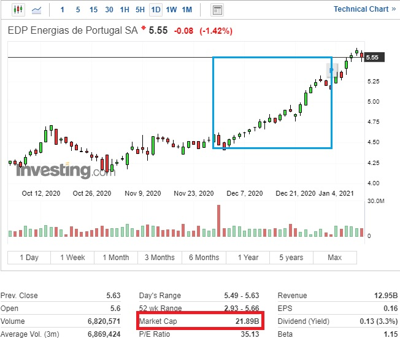
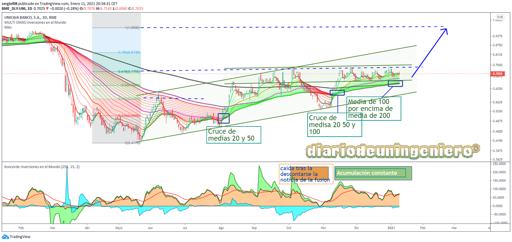
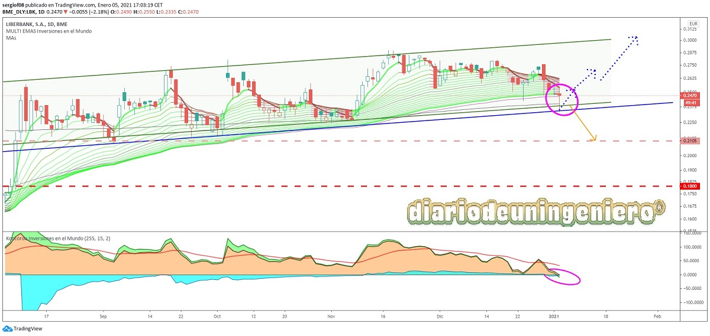

Fusión UNICAJA y Liberbank
Tras la fusión de Caixabank y Bankia el verano pasado o mejor dicho, la absorción de Bankia por parte de caixabank todos apuntaban a Unicaja y Liberbank como muy posible fusión. De hecho esta fusión ya se había intentando en el pasado y se estaba intentando antes de que Caixabank empezara a explorar la fusión con Bankia.

Si vemos la imagen podemos ver como ha quedado el mapa de bancos españoles tras 10 años de fusiones y adquisiciones, con 10 bancos actualmente tras la fusión de Caixabank y Bankia. Si a esto le añadimos la de Unicaja y Liberbank, y la posible absorción de Sabadell en los dos próximos años más la más que probable integración de Ibercaja, Kutxabank y Abanca por parte de algún otro banco de los resultantes, nos quedaríamos muy próximamente con 5 bancos en España, que serían Santander, BBVA, Caixabank, Unicaja y Bankinter.
Aquí mostrare una lista elaborada por el periódico 5 días en las que se presentaban los bancos más débiles de España proclives a una fusión o absorción. Esa lista es encabezada por Sabadell de España y muy cerca estaba Unicaja. Liberbank no aparece por recogerse en un segmento de banca más pequeña. Y es que Sabadell hasta hace poco tenía unos costes más de banca grande que de banca pequeña y unos beneficios que hasta el último año, principios de 2020 no empezaron a destacar tras muchos ajustes. Ahora mismo todos los bancos están empezando a digitalizarse y a realizar despidos masivos con el fin de ahorrar costes ante los tipos bajos que se tienen en Europa y que dan pocas posibilidades al beneficio. Y es que desde 2012 los tipos están casi al mínimo y tras varios años dudando el BCE si aplicar subidas con la crisis del coronavirus puede que no despeguen en otros 10 años más.

Esta fusión era muy buena porque las dos entidades se complementan. Liberbank tiene más presencia en Asturias, Cantabria, Castilla La mancha y Extremadura, por ser el resultado de las cajas de esas comunidades. Donde hace años eran entidades predominantes en las que las administraciones gestionaban muchas cuentas.
Unicaja por su parte lo tiene en Andalucía y Castilla y León por se la absorción de Caja Duero que es donde estaba caja España (uno de los bancos más importantes allí).
Ya hable de esta entidad en 2019,
si pinchas aquí veras más información atrás en el tiempo. Esta fusión va a dar muchísimas más sinergias que las que pueda presentar por ejemplo Bankia con Caixabank (Cataluña con Madrid y muchas partes de España).
Ya que se focaliza mucho más en estos territorios y más que evitar duplicidades que pasa mucho más con Bankia y Caixabank aqui lo que se hace es conseguir que el banco domine los territorios que ya dominaba pero mejor preparado ya que el software resultante y el gasto será reducido casi a la mitad.
Justo al comienzo de la crisis con todos los bancos con unas previsiones muy negativas el único en
tener valoraciones positivas desde el extranjero era Unicaja. Recomendado por JP Morgan con unos precios objetivos que al principio le daban un potencial del 50% y que ahora mismo le dan potencial a corto plazo de otro 50%, alcanzando el euro. Esta ultima recomendación ha venido tanto de JP Morgan como de Goldman &Sachs, gigantes de la banca americana.
Citibank, otro de los gigantes americanos también ha sido uno de los recomendadores de esta fusión que ya esta en su etapa final.
Goldman en su última valoración de Unicaja le daba un euro por acción tras el análisis en libros y los beneficios anuales.
Con todas estas noticias buenas en verano fueron dos de los valores que destacaron en la bolsa española con unas grandes subidas sobre los precios que se encontraban. Si valoramos los precios de los que venían antes del coronavirus ahora mismo cotizarían con un descuento muy sustancioso y con la fusión todavía sin descontar, y es que tras la fusión apenas se ha producido movimiento en la capitalización de los dos bancos. Eso hace sospechar a una acumulación por parte de algunas entidades y al reparto de poder en la futura entidad. Cuanto más baja es la cotización al negociar estos títulos menor es el coste de la negociación de los títulos y además podrían recoger acciones en el mercado minorista. Y es que tras la fusión Unicaja va a haber mermada su participación al 30% por lo que se podría pensar que estaría recogiendo algunas acciones antes de que la fusión se de por cerrada.
A día de hoy 11 de Enero, Unicaja capitaliza a 0,70, 1.100 millones de euros y Liberbank a 0,25 unos 740 millones de euros.
La fusión se hara a 1 x 2,77 acciones con lo que el precio esta ajustado al canje. Si bien tras haber cedido en todo Liberbank frente a Unicaja el canje ha salido bastante desfavorable en esta entidad, más teniendo en cuenta que no se va a dar prima a sus accionistas. Y es que solo las acciones de EDP valen casi como todo Liberbank. Recordemos que
Liberbank mantiene una participación del 3% en EDP (3% de 25.000M son 640M) como se puede ver en el siguiente gráfico de Investing. Esa subida de precio no se ha reflejado en Liberbank desde entonces.
"Y es que solo las acciones de EDP valen casi como todo Liberbank
Es por ello que tanto Unicaja como Liberbank se encuentran en un precio bastante inferior a su valor real, justamente lo contrario que pasa en las compañías renovables en el mercado español que parece que están reflejando beneficios a 50 años vista y posiblemente vayan a corregir próximamente. Banco Sabadell es otro de los bancos con este handicap del que hablare otro día.
Análisis técnico Unicaja
Si nos fijamos en Unicaja vemos como todavía no ha recuperado el valor que tenía antes del coronavirus al igual que la mayoría de bancos, sin embargo si que ha llegado a alcanzar el mínimo del año pasado. Esto hace ver como un signo de fortaleza ya que es casi el único banco que cumple esta premisa. Además por técnico se encuentra en un rango lateral que hace que pueda saltar en no mucho tiempo con varios indicadores que muestran acumulación sucesiva. La media de 20 ya ha superado a la media de 200 en diario, cosa que hizo en verano.
También podemos apreciar en el gráfico como se consiguió el 0,31 de caída apenas 3 meses después del crash del covid. Y como en Octubre tras comenzar los rumores de fusión se alcanzaría el 0,61 de fibonacci. Esto no hace más que confirmar la actual tendencia alcista del valor.
Si nos fijamos en el indicador concorde se ve como lleva ya 3 meses en acumulación y apenas se ha movido un ápice tras la confirmación de la fusión a finales del año. Esto indica que hay un movimiento corporativo dentro y que se podrá superar los objetivos primarios con mucho una acomodación del valor a hacia esas cotas y no con una subida especulativa que devuelva al valor donde estaba. Unicaja es una apuesta segura tanto a corto como a largo plazo, y no creo que tarde más del verano en alcanzar el 100% de la caída de fibo llegando el valor a un euro.

Análisis técnico Liberbank
Por otra parte Liberbank ha sufrido en demasía con la noticia de la fusión. Su aspecto técnico ha pasado de marcar compra a estar ahora mismo sujetándose con la cotización de Unicaja por el canje si bien sus medias se van amoldando y ya no tienen caídas a la vista encontrándose en la zona de soporte del canal.
Tras realizar un toque en la zona de 0,247, muy cerca del mínimo del canal reboto rápidamente y ahora anda serpenteando en ese valor. Y es que de haber subido mucho podría haber formado una formación en técnico de vela del amanecer pero estas formaciones habiendo ya una fusión de por medio no tienen mucho sentido. Si llegará a caer por debajo del soporte podría irse a los 0,22 que representaría un valor de 0,60 para Unicaja.
Este escenario, (0,22) no es para nada descartable ya que el canal de Unicaja justamente pasa muy cerca de esos valores, así que habrá que tener paciencia con el valor.

![[Valid RSS]](https://www.onepointsync.com/wp-content/uploads/2016/08/valid-rss-rogers.png "Validate my RSS feed")